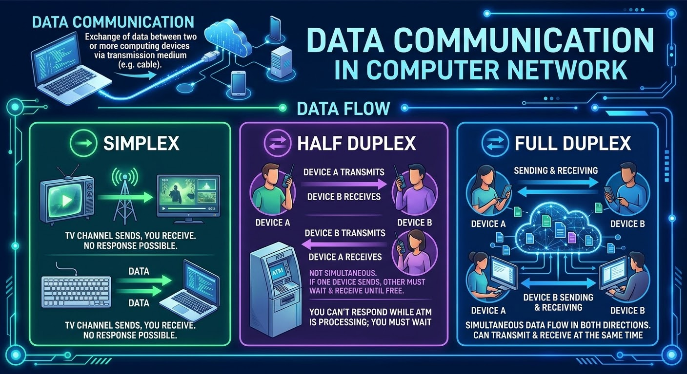

Data Communication in Computer Network.
Data communication is the exchange of data between two or
more computing devices connected to the Network via transmission medium(e.g. cable).
Data Flow..
Data flow means the way data flows from one node to another node. we will see three data flows:
Simplex, Half Duplex, and Full Duplex.
Simplex.
The simplex communication is unidirectional or it is a one-way communication. one device can transmit and the other device will receive.
For example: your home TV can be a simplex example. you always see what the TV channel sends but you can't respond or send data back to the TV show at that time.
or Keyboard can be another example, you type on keyboard and the keyboard sends data as an input but there is no data coming back to the keyboard.
Half Duplex.
In this situation, the communication is in both directions or we can say bidirectional, but not at the same time or simultaneously.
If one device sending, the other must wait and stay receiving until it gets a time or free channel to respond.
Walkie-Talkies are the most widely used as example of Half Duplex but ATMs can also be an example. because you can't respond to ATM while it is processing, you must wait until it finishes processing and asks you for input.
Full Duplex.
It is allmost same as Half Duplex but on Full Duplex the communication is simultaneously. which means Devices can send and receive at the same time.
On the Telephone line we can talk simultaneously (at the same time), even if the communication gets unclear.
See Figure-01

Figure-01